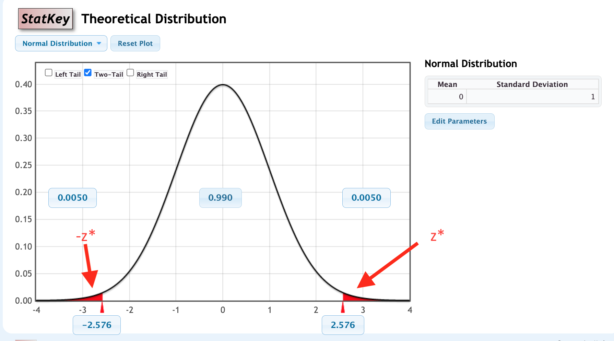

Section 5.2 Confidence Intervals Using Normal Distributions
Math 260 Applied Statistics
Warm-Up: Turn and Talk (60 sec)
In Chapter 3 you found a 95% confidence interval with the rule
\[
\text{statistic} \pm 2\times \text{SE}
\]
Where does the “2” come from?
What if you want a 90% or a 99% interval? Would the same “2” still work?
Outline
The method: \(\text{statistic} \pm z^* \times \text{SE}\)
Finding \(z^*\) with StatKey
Try it: real examples
Why it works: the normal model
Putting 5.1 and 5.2 together in StatKey
The Method
If a statistic is normally distributed, a P% confidence interval for the parameter is
\[\text{statistic} \pm z^* \times \text{SE} \]
where \(z^*\) is the critical value: the value with area P% between \(-z^*\) and \(z^*\) under the standard normal curve (mean 0, standard deviation 1).
For 95% confidence, \(z^*\approx 1.96\), which is where the “2” came from.
This extends the SE method to confidence levels beyond 95%.
Use StatKey to Find the Critical Value \(z^*\)

Example 1: Finding \(z^*\)
Use StatKey’s normal distribution to find the endpoints \(\pm z^*\) with the given area in the middle. Sketch the area.
(a) The area between \(\pm z^*\) is 0.95
(b) The area between \(\pm z^*\) is 0.80
(c) The area between \(\pm z^*\) is 0.90
Example 2: Teens and TikTok
A Pew Research Center survey of 1,458 U.S. teens ages 13 to 17 (fall 2025) found that 21% say they use TikTok “almost constantly.” Find a 95% confidence interval for the percentage of all U.S. teens who use TikTok almost constantly. Assume SE = 1.7 percentage points.
(a) What is \(z^*\) for a 95% confidence interval?
(b) Use \(\text{statistic} \pm z^* \times \text{SE}\) to find the interval.
(c) Interpret the interval in context.
Why It Works: The Normal Model
If a bootstrap distribution is bell-shaped, a P% confidence interval can be found as the interval containing the middle P% of the normal distribution with mean equal to the observed sample statistic and standard deviation equal to the standard error of the statistic:
\[
N(\text{sample statistic}, \text{SE})
\]
Standardizing turns “the middle P% of \(N(\text{statistic}, \text{SE})\)” into “the middle P% of the standard normal,” which is why \(\text{statistic} \pm z^* \times \text{SE}\) works.
Example 3: Confidence Intervals Three Ways (1 of 2)
In a July 2026 Gallup poll of 1,200 U.S. adults, 54% said they drink alcohol (about 648 of the 1,200). We want a 95% confidence interval for the proportion of all U.S. adults who drink alcohol.
(a) Sample statistic: __________
Bootstrap (StatKey):CI for a Single Proportion → Edit Data → sample size 1200, count 648 → generate at least 5000 samples → Two-Tail → middle 95%.
(b) Bootstrap standard error: __________ 95% percentile interval: __________
(c) Model the bootstrap distribution with a normal distribution with mean ________ and standard deviation ________. Use the Two-Tail option on this normal distribution to find the middle 95%.
Example 3: Three Ways (2 of 2)
Recall: 54% of 1,200 adults, \(\hat{p}=0.54\), bootstrap SE about 0.014.
(d) What is \(z^*\) for a 95% interval? ________ Use \(\text{statistic} \pm z^* \times \text{SE}\) to find the interval.
(e) Compare the three 95% intervals.
Method
95% interval
1
Bootstrap percentiles
2
\(N(\text{statistic},\text{SE})\) middle 95%
3
\(\text{statistic} \pm z^* \times \text{SE}\)
What do you notice, and why?
Example 4: The City that Never Sleeps
New York is known as “the city that never sleeps.” A random sample of 25 New Yorkers were asked how much sleep they get per night, and the average was 7.73 hours. We are told the standard error for this estimate is 0.15 hours. Use the normal distribution to find a 99% confidence interval for the average sleep of New Yorkers.
(a) What is \(z^*\)?
(b) Find the 99% confidence interval.
(c) Interpret the interval in context.
Putting 5.1 and 5.2 Together: StatKey Activity (1 of 4)
Proportion of NFL overtimes won by the coin flip winner.
StatKey:Test for a Single Proportion → choose the dataset NFL Wins in Overtime Games → generate a randomization distribution (several thousand samples) under \(H_0: p=0.5\). The original sample proportion is 0.561. Use \(H_a: p>0.5\) and the Right-Tail option.
(a) Randomization \(p\)-value: __________
(b) Standard error of the randomization distribution: __________
StatKey Activity: NFL Overtimes (2 of 4)
Recall: \(H_0: p=0.5\), \(H_a: p>0.5\), \(\hat{p}=0.561\), randomization SE about 0.024.
(d) In StatKey, switch to the normal distribution (mean 0, SD 1), choose Right-Tail, and find the area to the right of your \(z\): __________
(e) Compare the two \(p\)-values.
StatKey Activity: Atlanta Commute Times (3 of 4)
Bootstrap confidence interval for mean Atlanta commute time.
StatKey:Confidence Interval for a Mean → choose the dataset Atlanta Commute Time. The sample mean commute time is 29.11 minutes. Generate a bootstrap distribution (several thousand samples).
(a) 90% interval using Two-Tail: __________ to __________
(b) Standard error of the bootstrap distribution: __________
StatKey Activity: Atlanta Commute Times (4 of 4)
Recall: sample mean 29.11 minutes, bootstrap SE about 0.93.
(c) In StatKey, use the normal distribution (mean 0, SD 1) and Two-Tail to find the cutoffs with 90% in the middle: \(z^*=\) __________
(d) Use \(\text{sample statistic} \pm z^* \times \text{SE}\) to find the 90% interval.